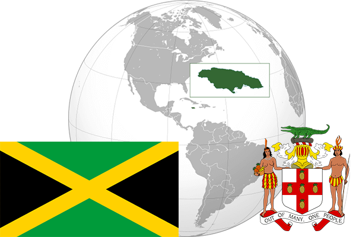

To`liq nomi: Yamayka
Region: Markaziy Amerikaning Markaziy qismi
Qonunchilik shakli: Konstitutsion Monarxiya
Mustaqillik kuni : 6-avgust 1962-yil (Birlashgan Qirollikdan)
Poytaxt: Kingston
Maydoni: 10 991 km² (dunyoda 160 -o`rinda )
Chegaradosh davlatlari: Yo`q
Aholisi: 2 930 050 (dunyoda 139 - o`rinda, 2014 -yil roʻyxat)
Aholi zichligi: 252 /km²
Aholining o`rtacha yoshi: 73,15 yil (74,9 ayollar, 71,4 erkaklar)
Rasmiy tili: Ingliz tili
Dini: protestant
Pul birligi: yamayka dollari
Telefon prefiksi: +1876
Internet domen: .jm
Xalqaro tashkilotlarga a`zoligi: BMT (1962 – yildan)
Dengiz va okeanlarga chiqishi: Karib dengizi
YIM: Butun: $ 26.446 mlrd, Jon boshiga $ 9,297 (2017 - yil roʻyxati)
Yirik shaharlari: Kingston